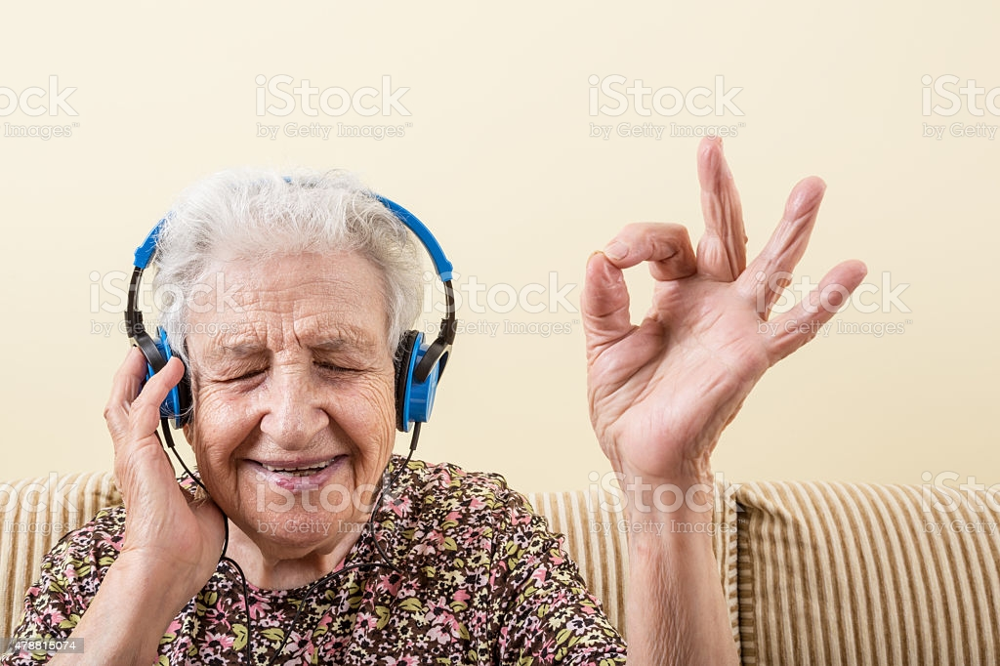

På fritiden gillar jag bland annat att spela spel, titta på filmer och lyssna på musik.
Mina favoritspel är GTA och FIFA.
Mina favoritartister är Kanye West och Kendrick Lamar.
Mina favorit filmer är Taken och Star Wars.
Klicka här för att gå tillbaka till startsidan.